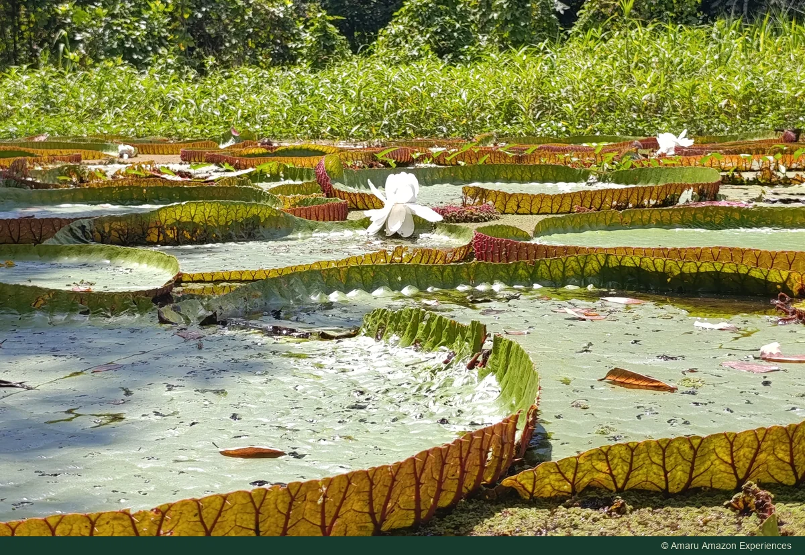
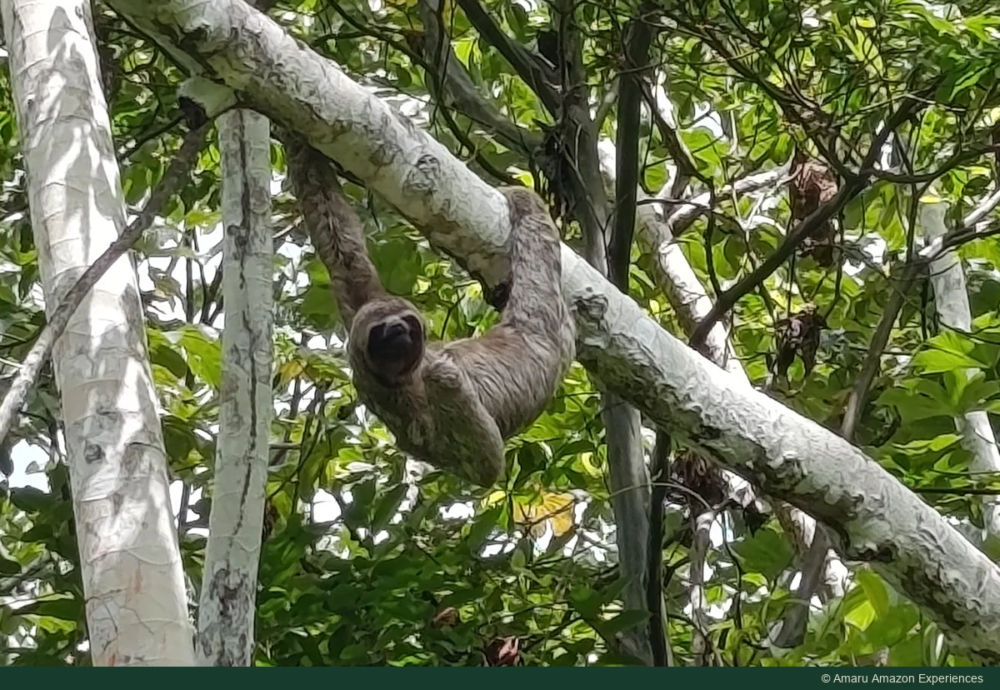

Puerto Nariño · Colombian Amazon
San Antonio del Cacao: Victoria Regia & sloths
Travel by river to San Antonio del Cacao, discover Victoria Regia and look for sloths among the branches. One excursion from Puerto Nariño.
Ask Amaru on WhatsApp ↗
About this experience
Set out from Puerto Nariño by boat towards San Antonio, in the Peruvian area of Cacao Island. The excursion brings together the river landscape, a visit to the community and the broad leaves of Victoria Regia. A sloth may appear among the branches: observation depends on the animals and the conditions of the day, without guaranteed sightings. This is one combined outing, planned with Amaru around your dates.
The journey begins on the river, with time to watch the changing banks before reaching San Antonio. Here, Victoria Regia and the chance of spotting sloths bring two different ways of looking at the Amazon together: across the water and up into the trees.
Take time to notice the shapes of the leaves, the surrounding vegetation and movement among the branches. This excursion combines the destination and its natural attractions; Victoria Regia and sloths are not presented as separate tours. Wildlife remains free to move, so patience is part of the experience.
Destination context sources: Colombia Travel ↗
What to explore
- River excursion from Puerto Nariño to San Antonio
- Victoria Regia and the surrounding vegetation
- The possibility of observing sloths, without guaranteed sightings

Before you go
- Time of day
- TIME AGREED TOGETHER
- Duration
- Confirm the duration and meeting point with Amaru for your dates.
- Physical effort
- Low to moderate effort
Levels are indicative. Terrain, water levels, weather and your group can change the demands of an outing.
Bring sun and rain protection, drinking water and a waterproof bag for your belongings. Allow for boarding and disembarking and for any walking agreed for the outing. Confirm the total duration, meeting point, route, equipment and inclusions with Amaru. Observe wildlife quietly and give animals space.
What should I confirm?
Ask about the route, departure, group requirements, guide language, equipment, transport and what is included. Share your dates and number of travellers, and review the full price and cancellation conditions before confirming anything.
Routes depend on water levels, weather and local conditions. Wildlife sightings cannot be guaranteed.
AMARU AMAZON EXPERIENCES
Experiences from our travellers
Travelled with Amaru? Share your experience to help other travellers.
Write a review
We review every opinion before publication. Legitimate criticism is welcome; we never change the text or stars.
Copy the ID and code before closing or reloading this page.
Web submissions are not available yet. You can contact Amaru by email. Contact by email ↗
Delete my review
Contact by email ↗AMARU AMAZON EXPERIENCES
Plan this experience
Choose this experience on its own or discuss it as part of your Amazon journey. An enquiry does not confirm a booking, and this website does not take payments.
Ask Amaru on WhatsApp ↗